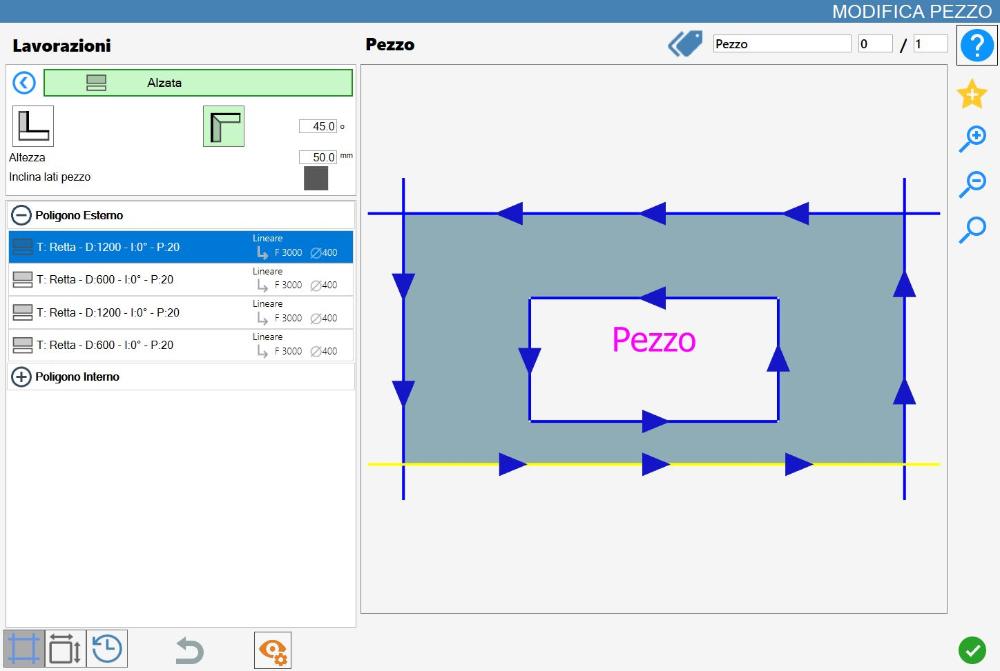
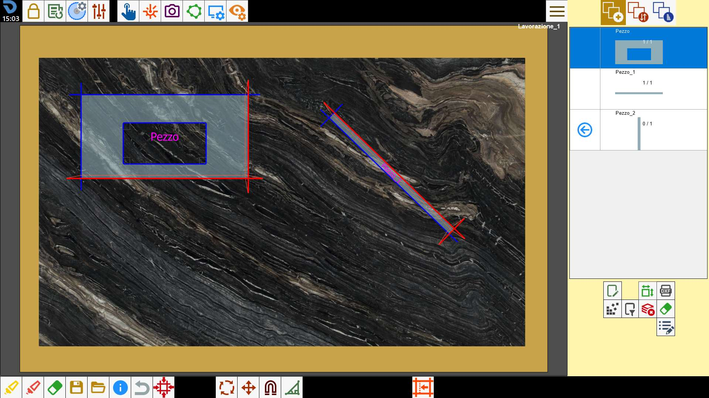

Mit dieser Funktion kann ausgehend von der Seite eines Objekts ein rechteckiges Werkstück erstellt werden, um eine Aufkantung zu erhalten.

Bearbeitungsarten
Um diese Bearbeitung zu verwenden, muss zunächst einer der beiden verfügbaren Modi über die entsprechende Schaltfläche ausgewählt werden:
 | Modus Rückwand |
 | Modus Aufkantung |
Parameter
Höhe | Höhe der Aufkantung, die bei Ausführung der Bearbeitung eingefügt wird. |
Werkstückseiten neigen | Wenn aktiviert, werden automatisch Gehrungsschnitte eingefügt, falls andernfalls Schnitte kollidieren würden. |
Zusätzlicher Parameter für den Modus Aufkantung
Grad | Dieser Parameter ist nur aktiv, wenn der Modus Rückwand ausgewählt ist. |
Ausführung der Bearbeitung
Die Bearbeitung kann angewendet werden, indem die Schaltfläche links neben dem entsprechenden Schnitt in der Polygonliste gedrückt wird.
Ein rotes Symbol mit einem „X“ zeigt an, dass die Bearbeitung nicht auf den gewünschten Schnitt angewendet werden kann.
Durch direktes Anklicken des Schnitts in der Vorschau oder, sofern möglich, des Symbols links neben dem Schnitt in der entsprechenden Liste auf der linken Seite wird die ausgewählte Bearbeitung ausgeführt.
Bei jeder erfolgreich auf das Material angewendeten Aufkantung oder Verbindung werden die Vorschau und die Schnittliste links aktualisiert.
Jedes mit dieser Funktion erstellte Werkstück wird der Werkstückliste von Parametrix hinzugefügt.
Die neu hinzugefügten Werkstücke werden außerdem in eine Liste unmittelbar oberhalb der Vorschau im Panel „Werkstück bearbeiten“ aufgenommen;

Aus dieser Liste kann das gewünschte Werkstück des Blocks ausgewählt werden, um dessen Vorschau und die zugehörigen Schnitte in der Schnittliste anzuzeigen.
Ausführung Rückwand
Nun wird die Anwendung von zwei Rückwänden gezeigt, wenn der Parameter „Werkstückseiten neigen“ aktiviert bzw. deaktiviert ist.
Zunächst wird eine Rückwand mit einer Höhe von 1000 mm an der unteren Seite des Rechtecks angewendet und anschließend eine zweite Rückwand an der rechten Seite desselben Rechtecks.
Werkstückseiten neigen deaktiviert
Im resultierenden Werkstück erscheinen keine geneigten Seiten und die Schnitte des ursprünglichen Werkstücks werden in der Schnittliste nicht geändert:

Werkstückseiten neigen aktiviert
Bei einer Eckpunktausrichtung der neuen Werkstücke, d. h. Pezzo_1 und Pezzo_2, werden die nicht an das ursprüngliche Werkstück angrenzenden Seiten mit gemeinsamem Eckpunkt durch Gehrungsschnitte ersetzt:

Ausführung Aufkantung
Nun wird die Anwendung von zwei Aufkantungen gezeigt, wenn der Parameter „Werkstückseiten neigen“ aktiviert bzw. deaktiviert ist.
Zunächst wird eine Aufkantung mit einer Höhe von 50 mm an der unteren Seite des Rechtecks angewendet und anschließend eine zweite Aufkantung an der rechten Seite desselben Rechtecks.
In diesem Modus werden auf das ursprüngliche Werkstück (Pezzo) und jedes eventuell erzeugte Werkstück (Pezzo_1 und Pezzo_2) automatisch Gehrungsschnitte auf allen Seiten angewendet, die aneinander angrenzen.
Der Neigungswinkel wird durch den Parameter Grad bestimmt.
Werkstückseiten neigen deaktiviert
In diesem Fall werden die angrenzenden Seiten zwischen dem ursprünglichen Werkstück und den neu erstellten Werkstücken automatisch durch Gehrungsschnitte ersetzt.
Die Neigung des Schnitts hängt vom eingestellten Parameter Grad ab.

Werkstückseiten neigen aktiviert
Wie im vorherigen Fall werden Gehrungsschnitte an den aneinander angrenzenden Schnitten der verschiedenen Werkstücke eingefügt, wobei die Neigung vom Wert des Parameters Grad abhängt.
Wenn zusätzlich der Parameter „Werkstückseiten neigen“ aktiviert wird, werden wie bei den Rückwänden bei einer Ausrichtung der Eckpunkte der neuen Werkstücke die nicht an das ursprüngliche Werkstück angrenzenden Seiten mit gemeinsamem Eckpunkt automatisch durch Gehrungsschnitte ersetzt.

Werkstücke teilen
Wenn dem ausgewählten Werkstück über Bearbeitungen vom Typ Aufkantung oder Rückwand ein oder mehrere Werkstücke zugeordnet wurden, erscheint oben im Panel „Werkstück bearbeiten“ eine spezielle Schaltfläche zur Verwaltung der zugeordneten Werkstücke.
 | Werkstücke teilen |
|---|
Vor dem Teilen werden die zugeordneten Werkstücke im Arbeitsbereich als Einheit verwaltet. In diesem Zustand wird ein Block aus mehreren Elementen erstellt, auf die dieselben Vorgänge angewendet werden, ohne dass sie bereits getrennt sind.
Wird beispielsweise das ursprüngliche Werkstück, eine Aufkantung oder eine Rückwand aus der Werkstückliste dem Arbeitsbereich hinzugefügt, werden automatisch auch alle anderen zugeordneten Elemente eingefügt.

Beim Drücken der Schaltfläche Werkstücke teilen, wird jedes durch Aufkantung oder Rückwand erzeugte Werkstück vom ursprünglichen Werkstück getrennt und als unabhängiges Element behandelt.
Anschließend verschwinden sowohl die Liste der zugeordneten Werkstücke, die zuvor oberhalb der Vorschau im Panel Werkstück bearbeiten sichtbar war, als auch die Schaltfläche zum Teilen der Werkstücke aus der Benutzeroberfläche.
Beim Teilen behält jedes Werkstück die bei der Erzeugung durch Aufkantung oder Rückwand erhaltenen Gehrungsschnitte sowie alle Anpassungen und Änderungen bei, die vorgenommen wurden, solange es noch dem ursprünglichen Werkstück zugeordnet war.
Die folgende Abbildung zeigt die getrennte Verwaltung der einzelnen Werkstücke, die zuvor zum selben Block gehörten.
Insbesondere wurden nur zwei der drei Werkstücke in den Arbeitsbereich eingefügt (das ursprüngliche Werkstück und das erste durch Anwendung der ersten Aufkantung erzeugte Werkstück), und das zweite Werkstück wurde neu positioniert und gedreht, ohne eine Beeinträchtigung des ursprünglichen Werkstücks zu verursachen:
